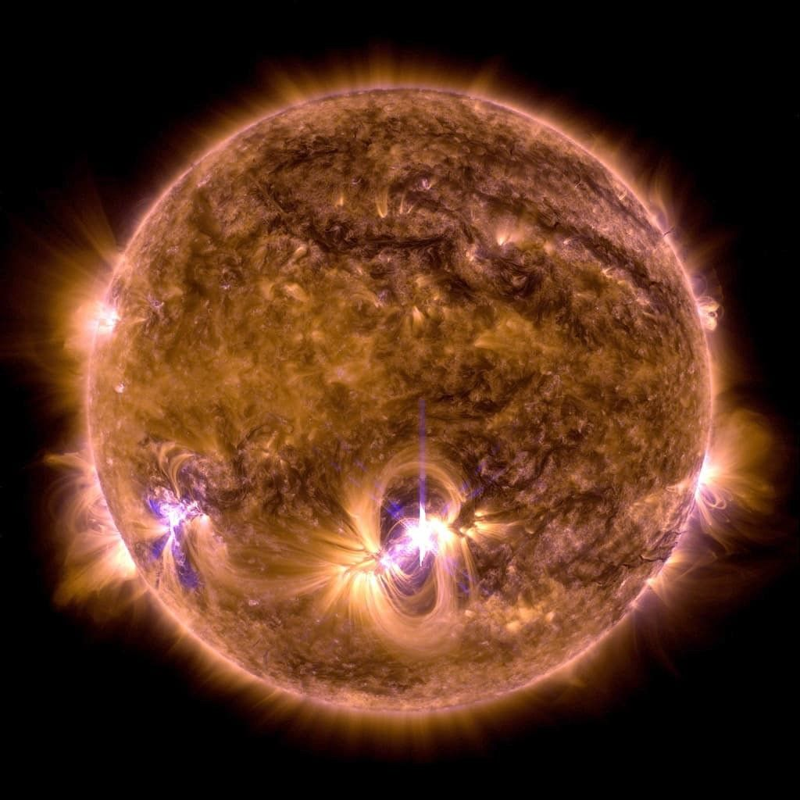
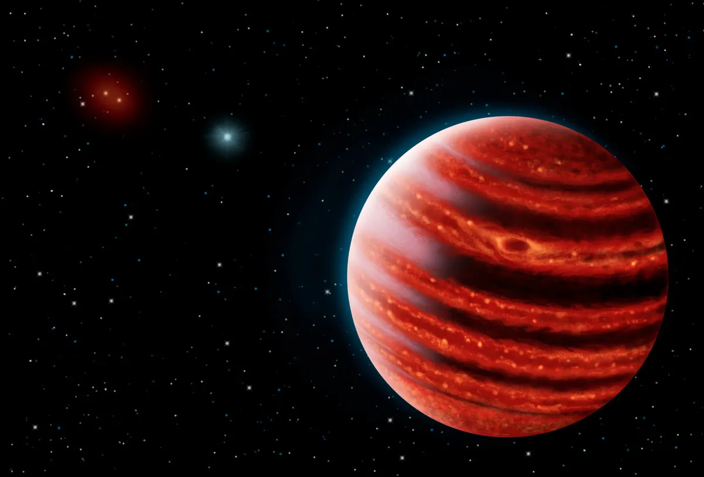
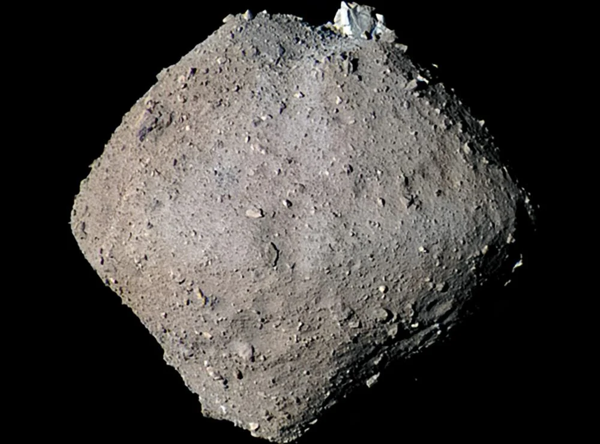
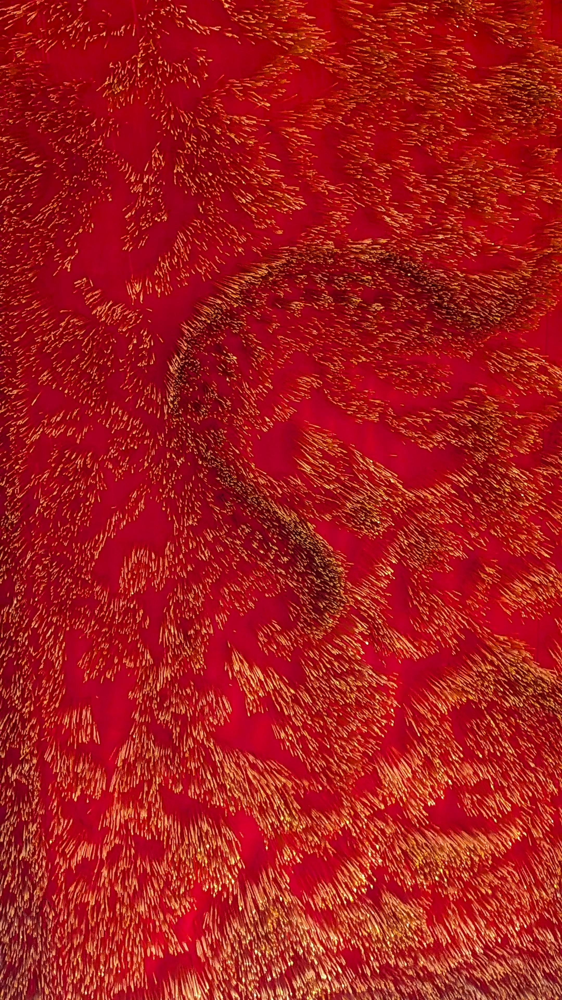

I am a soon-to-graduate (July, 2026) PhD candidate in the Department of Physics at the University of Toronto.
My main interest is fluid dynamics. My PhD has focused on geophysical and astrophysical applications — I studied planetary to stellar scale flows using primarily theoretical and computational, and occasionally observational tools through collaborations. Previously, I have also worked on non-Newtonian rheology granular flows on asteroids, and am trained in Aerospace Engineering.
I appreciate how mathematical models enable fundamental understanding of complex natural phenomena. This is the goal that has driven my 8+ years of research experience. I am also interested in agentic AI and the ways in which it can be used to accelerate scientific discovery, and have worked on designing tests for LLM evaluation in the field of physics.
Outside of research I love biking and running, cooking, playing different musical instruments, and human psychology.
Research Areas

Stars
Differential rotation and meridional circulation in stellar interiors are often neglected in evolutionary models that treat stars as rigidly-rotating one dimensional objects. However, in reality they highly three dimensional with complex fluid motion that not only affect the current state of stars but also their past and future. I work on this using theoretical and computational fluid dynamics.
View details →
Planets
Exoplanetary climate physics is focused on using a variety of tools. I use shallow water models of planetary atmospheres to study variably irradiated synchronous and asynchronous planets. I also collaborate on using high resolution phase resolved spectroscopy to probe ultra hot Jupiters for magnetic fields.
View details →
Asteroids
In the past, I have studied the spin and shape evolution of rubble-pile asteroids using discrete and continuum methods for granular flows with focus on top-shaped asteroids like Bennu and Ryugu. Current collaborative work extends into developing a comprehensive asteroid evolution history package for population statistics.
View details →
Miscellaneous
Some of my old work dealt with the theoretical design of mechanical logic gates like the OR gate, using compliant bistable arches and their macroscale prototyping as a proof of concept for eventual miniaturization. I have also worked on designing tests for LLM evaluation in the field of physics.
View details →Publications
- Thermal response and climate variability of tidally locked exoplanets In prep · 2026
- Meridional Circulation Molecular-Weighted The Astrophysical Journal · 2025
- Planetary Rhythms: Synchronous Circulation on Variably Irradiated Asynchronous Planets The Astrophysical Journal · 2025
- Meridional Circulation Streamlined Geophysical and Astrophysical Fluid Dynamics · 2024
- Regolith Flow on Top-Shaped Asteroids Proceedings of the Royal Society A · 2022
- Spin Change of Rubble-Piles Due to Mass Shedding Culminating from Surface Motion Lunar and Planetary Science Conference · 2021
- Granular Flow on a Rotating and Gravitating Elliptical Body Journal of Fluid Mechanics · 2021
- A Mechanical OR Gate Using Pinned-Pinned Bistable Arches Mechanism and Machine Science · 2020
- A benchmark of expert-level academic questions to assess AI capabilities (Humanities Last Exam) Nature · 2025
Stars
Stellar interiors · Fluid dynamics · Rotational mixing
Overview
Standard stellar evolution models typically treat stars as rigidly-rotating, one-dimensional objects, neglecting the rich three-dimensional fluid dynamics of their interiors. In reality, stars exhibit differential rotation — where different latitudes and depths rotate at different rates — alongside large-scale meridional circulation, a slow overturning flow driven by imbalances between rotation and thermal stratification.
These flows matter because they mix chemical species across layers that would otherwise remain separate, alter angular momentum transport, and shape a star's long-term evolutionary trajectory. My work develops theoretical and computational frameworks to model these flows, going beyond the one-dimensional approximation to capture the genuine three-dimensional structure of stellar interiors.
Key Questions
How does meridional circulation behave in the presence of compositional gradients — for instance, when molecular weight varies across layers? How do these flows interact with convection and magnetic fields? And how can we build models that are tractable enough to be incorporated into evolutionary codes while remaining physically faithful?
Methods
My work uses a combination of analytic theory and numerical simulation. I construct reduced models — such as streamlined formulations of the meridional circulation equations — that capture the essential physics while remaining computationally efficient. These are validated against more complete simulations and, where possible, against observational constraints such as stellar rotation profiles from asteroseismology.
Related Publications
- Meridional Circulation Molecular-Weighted The Astrophysical Journal · 2025
- Meridional Circulation Streamlined Geophysical and Astrophysical Fluid Dynamics · 2024
Planets
Exoplanetary atmospheres · Climate dynamics · Magnetic fields
Overview
The atmospheres of exoplanets are laboratories for extreme fluid dynamics. Planets orbiting close to their host stars can be tidally locked — always showing the same face to the star — or in higher-order spin-orbit resonances, leading to dramatic day–night temperature contrasts and complex atmospheric circulation patterns. My work focuses on understanding how these planets' climates respond to variable and asymmetric stellar irradiation.
A particular focus is on asynchronously rotating planets — worlds whose rotation period does not match their orbital period — and the rich dynamical phenomena that arise, including resonance effects, traveling waves, and the possibility of climate oscillations with observable signatures.
Shallow Water Models
I use shallow water models of planetary atmospheres as a tractable framework for studying general circulation. These models capture the large-scale dynamics — Rossby waves, jet streams, gyres — while being computationally accessible enough to explore broad parameter spaces. Key results from this work include the identification of "planetary rhythms": periodic climate oscillations in variably irradiated asynchronous planets driven by wave–mean-flow interactions.
Magnetic Fields via Spectroscopy
In a collaborative observational thread, I work on detecting magnetic fields in ultra-hot Jupiter atmospheres using high-resolution, phase-resolved cross-correlation spectroscopy. Magnetic fields can suppress circulation and influence chemical mixing, making their detection a key step toward understanding the full physics of these extreme worlds.
Related Publications
- Planetary Rhythms: Synchronous Circulation on Variably Irradiated Asynchronous Planets The Astrophysical Journal · 2025
Asteroids
Granular flows · Rubble-pile dynamics · Shape evolution
Overview
Many small bodies in the solar system — including the well-known asteroids Bennu and Ryugu — are "rubble piles": loose aggregates of rock and dust held together by self-gravity and surface friction, rather than by material strength. Their distinctive top-like shapes are thought to arise from surface mass redistribution driven by the YORP effect, a subtle radiation-induced spin-up that can trigger regolith flow and mass shedding.
My earlier work focused on modeling the granular mechanics of these processes using both discrete element methods — where each grain is tracked individually — and continuum approaches that treat the regolith as a flowing material. This dual approach allows cross-validation and provides insight into which aspects of the dynamics are captured by each method.
Key Results
I studied how regolith flows across the surface of a top-shaped asteroid under spin-up, showing how material migrates toward the equator and ultimately sheds, contributing to the characteristic equatorial ridge seen on Bennu and Ryugu. Companion work examined how this mass shedding feeds back to alter the spin state of the body itself.
Ongoing collaborative work extends this into population-level statistics, developing a comprehensive package for modeling asteroid evolution histories that can be compared against the observed distribution of small-body shapes in the solar system.
Related Publications
- Regolith Flow on Top-Shaped Asteroids Proceedings of the Royal Society A · 2022
- Spin Change of Rubble-Piles Due to Mass Shedding Culminating from Surface Motion Lunar and Planetary Science Conference · 2021
- Granular Flow on a Rotating and Gravitating Elliptical Body Journal of Fluid Mechanics · 2021
Miscellaneous
Mechanical computing · LLM evaluation · Compliant mechanisms
Mechanical Logic Gates
Before transitioning fully into astrophysics, I worked on the theoretical design and macroscale prototyping of mechanical logic gates — specifically an OR gate constructed from pinned-pinned bistable arches. These compliant mechanisms exploit elastic snap-through instability to perform binary logic without electronics, as a proof of concept for eventual miniaturization into MEMS-scale devices. This work sits at the intersection of structural mechanics, nonlinear dynamics, and mechanical engineering design.
LLM Evaluation in Physics
More recently, I contributed to the design of evaluation benchmarks for large language models in the domain of physics. This work probes the reasoning and knowledge limits of frontier models using carefully constructed physics problems, contributing to the broader effort to understand where LLMs succeed and fail at scientific reasoning. I was a contributor to the Humanities Last Exam dataset published in Nature in 2025.
Related Publications
- A Mechanical OR Gate Using Pinned-Pinned Bistable Arches Mechanism and Machine Science · 2020
- A benchmark of expert-level academic questions to assess AI capabilities (Humanities Last Exam) Nature · 2025
Education & Experience
Thesis: Reduced-order hydrodynamics across stellar and planetary scales
Advisors:
Kristen Menou (University of Toronto, Scarborough)
Marta L. Bryan (Pennsylvania State University)
Thaddeus D. Komacek (University of Oxford)
Summer Programs
FDSE @ École Polytechnique, Paris (2022)
OWL Lab @ UC Santa Cruz (2025)
Observing Time
Co-PI, IGRINS Cycle 2025A — Magnetic fields of Ultra-Hot Jupiters
Teaching
PHY131H
PHY151H
Fluid Mechanics
Nonlinear Physics
Publications
4 journal papers
2 in prep
8 invited talks
Thesis: Spin evolution of top-shaped asteroids due to landslides
Advisor: Ishan Sharma (IIT Kanpur)
Award: Academic Excellence Award — top 5 out of 60 (2019 & 2020)
Fellowship: Institute Fellowship, Government of India (2018–2020)
Thesis: Compliant logic gates using bistable arches
Advisors:
Amitabha Ghosh (IIEST Shibpur)
G. K. Ananthasuresh (IISc Bangalore)
Honours: INAE Summer Research Fellowship (2017) · All India Rank 11 in Aerospace Engineering entrance exam (2018)
Feel free to reach out to me at deepayan.banik@utoronto.ca — I am always happy to discuss research, collaborations, or questions. Undergrad and masters students are especially welcome.
| GitHub | github.com/Textydeep |
| linkedin.com/in/textydeep | |
| University | Department of Physics, University of Toronto |